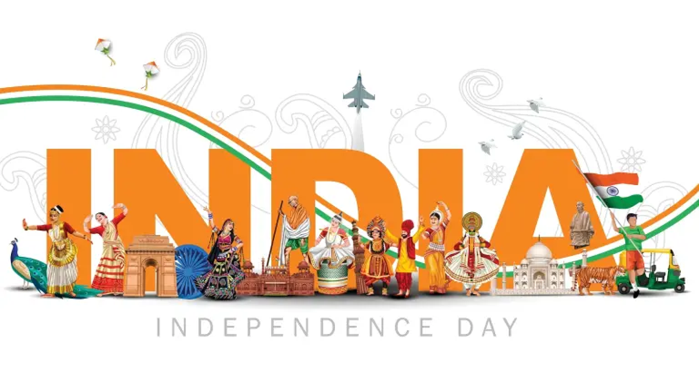

Independence Day Celebration
The Independence Day of India, which is celebrated religiously throughout the Country on the 15th of August every year, holds tremendous ground in the list of national days, since it reminds every Indian about the dawn of a new beginning, the beginning of an era of deliverance from the clutches of British colonialism of more than 200 years. It was on 15th August 1947 that India was declared independent from British colonialism, and the reins of control were handed over to the leaders of the Country. India's gaining of independence was a tryst with destiny, as the struggle for freedom was a long and tiresome one, witnessing the sacrifices of many freedom fighters, who laid down their lives on the line.
Profile
India is one of the oldest civilizations in the world with a kaleidoscopic variety and rich cultural heritage. It has achieved all-round socio-economic progress since Independence. As the 7th largest country in the world, India stands apart from the rest of Asia, marked off as it is by mountains and the sea, which give the country a distinct geographical entity. Bounded by the Great Himalayas in the north, it stretches southwards and at the Tropic of Cancer, tapers off into the Indian Ocean between the Bay of Bengal on the east and the Arabian Sea on the west.
Lying entirely in the northern hemisphere, the mainland extends between latitudes 8° 4' and 37° 6' north, longitudes 68° 7' and 97° 25' east and measures about 3,214 km from north to south between the extreme latitudes and about 2,933 km from east to west between the extreme longitudes. It has a land frontier of about 15,200 km. The total length of the coastline of the mainland, Lakshadweep Islands and Andaman & Nicobar Islands is 7,516.6 km.
States and Union Territories
India, a union of states, is a Sovereign, Secular, Democratic Republic with a Parliamentary system of Government. The President is the constitutional head of Executive of the Union. In the states, the Governor, as the representative of the President, is the head of Executive. The system of government in states closely resembles that of the Union. There are 28 states and 8 Union territories in the country. Union Territories are administered by the President through an Administrator appointed by him/her. From the largest to the smallest, each State/UT of India has a unique demography, history and culture, dress, festivals, language etc. This section introduces you to the various States/UTs in the Country and urges you to explore their magnificent uniqueness...
My India my Pride
India is one of the oldest civilizations in the world, spanning a period of more than 4000 years, and witnessing the fusion of several customs and traditions, which are reflective of the rich culture and heritage of the Country.
The history of the nation gives a glimpse into the magnanimity of its evolution - from a Country reeling under colonialism, to one of the leading economies in the global scenario. More than anything, the nationalistic fervour of the people is the contributing force behind the culmination of such a development. This transformation of the nation instills a sense of national pride in the heart of every Indian within the Country and abroad, and this section is a modest attempt at keeping its flame alive.